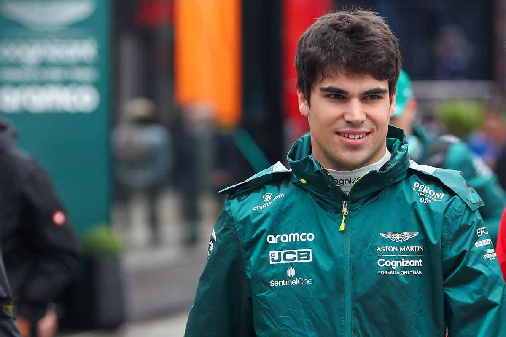

Aston Martin Aramco F1 Team

Historia
Aston Martin regresó a la Fórmula 1 en 2021, reviviendo un nombre histórico que había participado brevemente en 1959-1960.
El equipo, con sede en Silverstone (Reino Unido), surgió de la evolución de Racing Point y Force India.
Desde su retorno, Aston Martin ha buscado consolidarse como un equipo competitivo, con grandes inversiones y pilotos de alto nivel.
Palmarés
- ⚡ Aún sin campeonatos de constructores ni pilotos.
- ⚡ Diversos podios desde 2021, destacando en 2023 con Fernando Alonso.
- ⚡ Una de las marcas más icónicas del automovilismo de lujo.
Pilotos actuales
Fernando Alonso 🇪🇸

Nacido en 1981 en Oviedo, España.
Bicampeón del mundo (2005 y 2006 con Renault).
Conocido por su talento excepcional, estrategia de carrera y longevidad en la Fórmula 1.
En 2023 sorprendió con múltiples podios para Aston Martin, consolidando al equipo como un contendiente serio.
Lance Stroll 🇨🇦

Nacido en 1998 en Montreal, Canadá.
Debutó en F1 en 2017 con Williams, consiguiendo un podio en su temporada debut.
Se unió a Racing Point en 2019 y pasó a Aston Martin en 2021.
Ha demostrado velocidad en clasificación y consistencia en carrera.
⬅ Volver al inicio